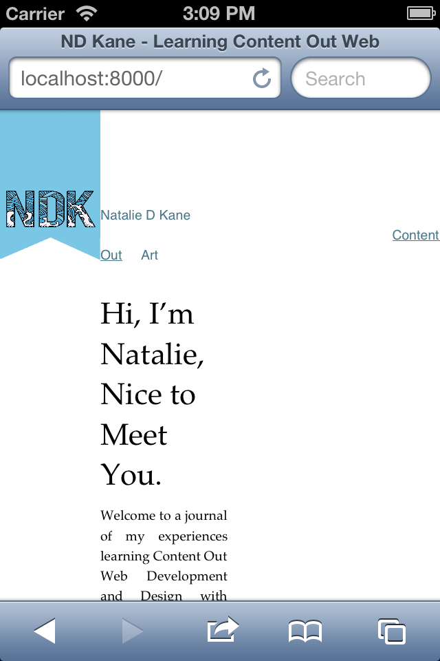
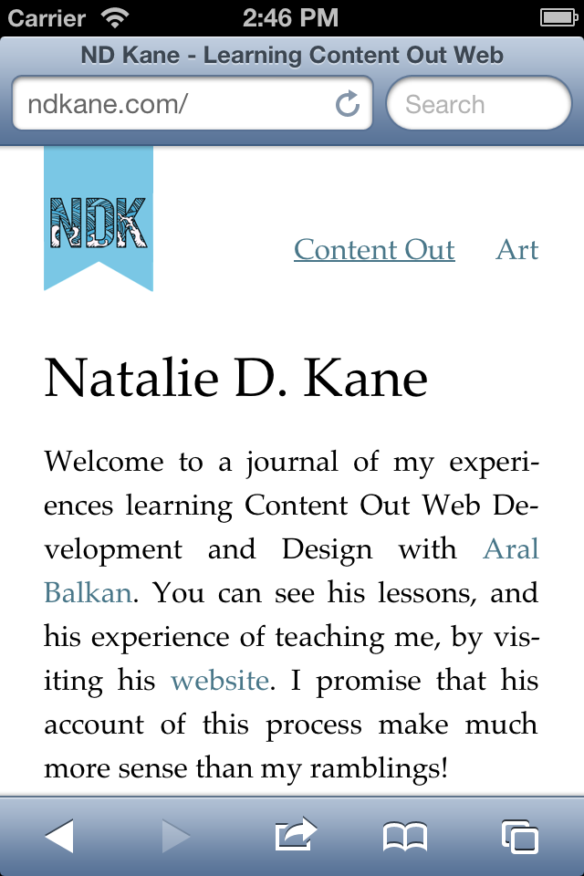

Last week, we encountered a few problems with NDKane.com. Largely, that it looked terrible on mobile. This post will explain how I turned a wholly horrible site into a delightful little joy. However, first we had to sort out the navigation. As you can see here, on mobile it was very, very broken:
We took away the margin-left and then set the position of the navigation as ‘absolute’. This made the position of the element relative to the ancestor element, in this case, the body. It means that as the viewport changes, the element will always remain relative to the body, and won’t drift as it did before.
Instead of using margins, we set the top and right properties to position the image.
As we wanted the Navigation to be above the body, we set a negative value for the top property. The right property was set to 0, to align it with the body.
As you can see, I have a shiny new logo that looks like a bookmark! The font used is SuastOrnad TFB by Kaiser Zharkhan. Positioning this was another exercise in breaking from the flow. When I first placed this, I set it as a background image in the CSS, however this meant that I couldn’t set it as a home link.
So, I set the image within an h1 in the header. Then, I wrapped the h1 in an anchor tag, allowing me to link back to my table of contents. To break from the flow, I changed the positioning of my image from inline to absolute, as I did with the navigation.
header img
{
position: absolute;
width: 60px;
height: 113px;
top: -140px;
}
header h1
{
font-size: 16px;
display: inline;
margin-bottom: 0;
padding: 0;
line-height: 24px;
}As the header image breaks from the body, the body itself moves down, and therefore we must adapt the margin-top of the body to accommodate for the navigation and header image. As the header image moves down, I bring the body up by decreasing the margin-top of the body, while keeping to my grid by using multiples of 24.
I’m using Lea Verou’s syntax highlighter Prism to highlight code elements that are wrapped inside a pre element, which is rather delightful and, in my opinion, makes it easier to read and understand. I don’t use pre by itself, as it is not semantic, a point that is also stressed in Lea’s library.
As part of my homework, Aral has set me the task of redesigning websites that I come across and find particularly problematic. To find out more about my experiments visit my Redesign page, and email me your comments and suggestions.
As Aral has corrected me many times, the web is responsive by default, it’s just that many designers have become accustomed to creating fixed designs that break with the inherent responsiveness of the web. I realised that I was doing this when I checked my site on mobile. It looked all shiny and wonderful in a browser, however it broke apart as soon as it went mobile, or to a smaller browser size. To fix this, we started learning about Breakpoints and Media Queries. I should tell you in advance, I’ve become rather good friends with Media Queries.
A breakpoint is the point at which the design breaks. Yes, I know it sounds obvious, but breakpoints afford you the opportunity to transform and adapt your content to changes. For example, a three column layout may be illegible on a narrower screen, so your design must adapt to be legible, perhaps transforming to a single column layout. The first step was to figure out where my design would break. Aral drew me this rather useful diagram to illustrate where my design broke (a width of less than 600px for the body, combined with our font size, resulted in a measure that was too narrow):
We set the breakpoint — the minimum width required to display the content in this manner — at 768px, which by coincidence is the device width of iPad. However it’s important to stress that breakpoints should not be set for specific devices, they should be determined by when your content breaks.
@media all and (min-width: 768px)
{
}Instead of making the wider layout the default, we designed mobile-first. All of our base styles apply to devices that are narrower than the breakpoint we discovered (768px). In the media query, we overrode some of those base styles to adapt the design to wider viewports. For example, when my device width exceeds 768px, my header image goes from 60px to 96px, making it larger. The font size of my headlines, and their corresponding line-heights, also change and adapt when the device width exceeds 768px.
After learning about Media Queries, and fixing the problems I had with the viewport, my site on mobile now looks like the figure below.
I learnt about using HTML entities to fix formatting problems, particularly with justified text, such as ­ (which tells the code that it's okay to break there). I also learnt about the importance of visualising my design; actually drawing it out rather than trying to mentally picture it and getting myself confused. I was also introduced to Dash — a code snippet manager and API documentation browser — which makes working a lot easier, and Foster Kitten Cam, which makes my day a lot better. I told you that I liked cats.
Next week, I’m learning about root ems. As I’ve mentioned, maths scares me, however I’ve been promised that I won’t need a maths degree to know them.
Danish Phrase of the Week: Vi har mange fugle i vores have — We have many birds in our garden.
(Mine katte elsker fugle, de er meget uartig, men de lever inde for vore flad.)
Natalie
Copyright © 2013 Natalie D. Kane